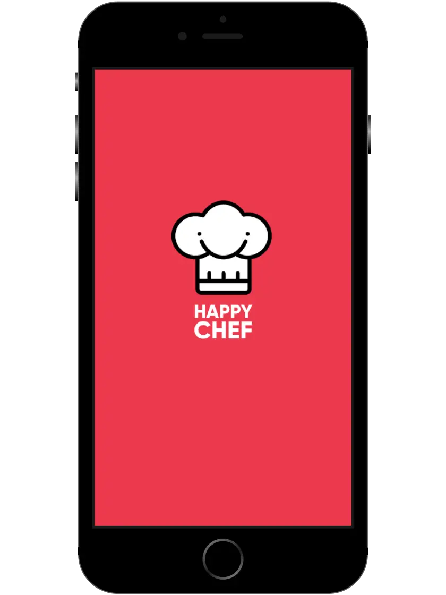
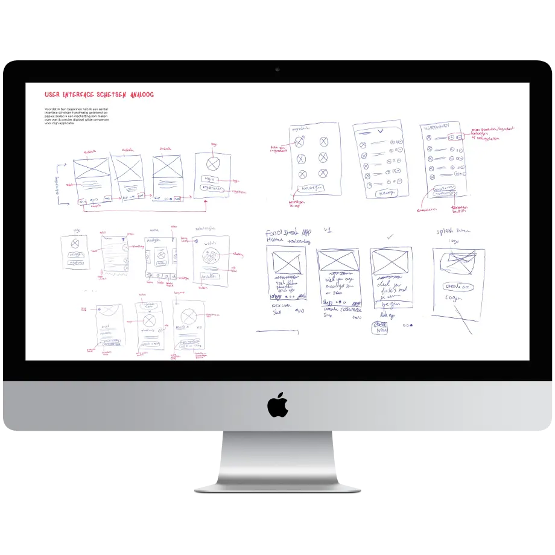
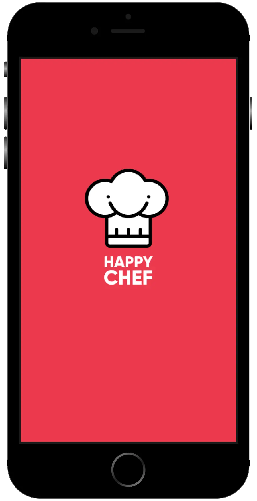
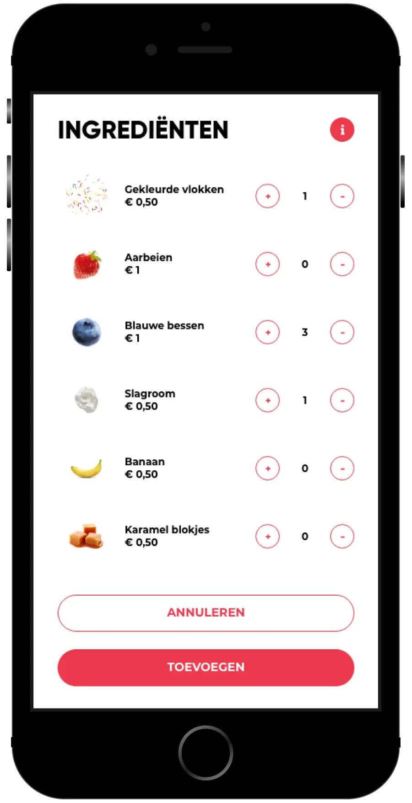
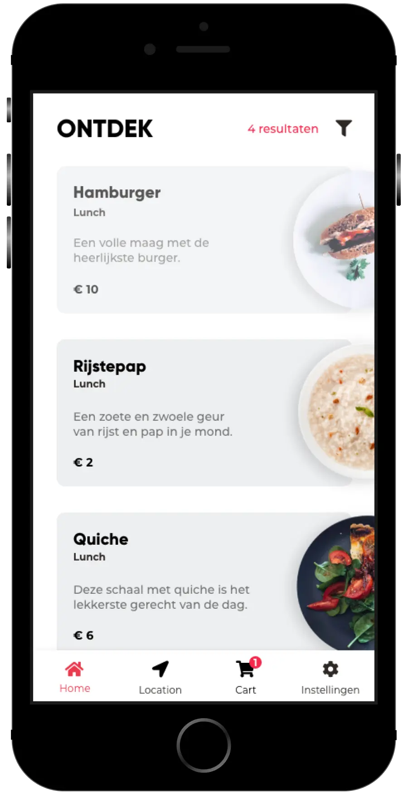
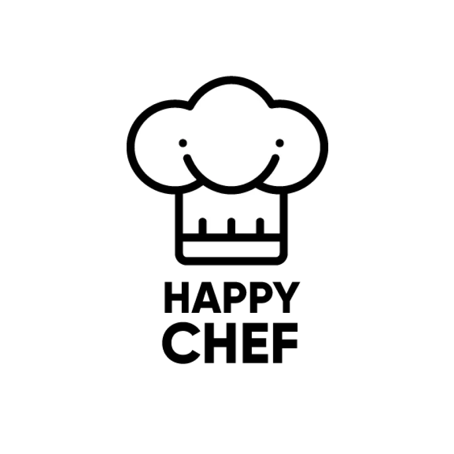

Onderzoek
Het vergelijken van verschillende voedingsapplicaties om inspiratie op te doen voor navigatie, interface en visuele elementen.
De Happy Chef is een conceptuele kook- en bestel applicatie die is ontwikkeld tijdens mijn studie heb ontwikkeld om Design patterns beter te begrijpen en toe te passen. Deze applicatie richt zich voornamelijk op het samenstellen van een heerlijke maaltijd naar eigen keuze.

De uitdaging binnen dit project was om een gebruiksvriendelijke kook- en bestelapplicatie te ontwerpen waarin verschillende design patterns op een logische manier werden toegepast.
Hierbij was het belangrijk dat de gebruiker eenvoudig een maaltijd kon samenstellen en tegelijkertijd een prettige en overzichtelijke gebruikerservaring kreeg.
Daarnaast wilde ik onderzoeken hoe design patterns niet alleen technisch, maar ook binnen het ontwerp en de interactie met de gebruiker konden worden toegepast.
Het vergelijken van verschillende voedingsapplicaties om inspiratie op te doen voor navigatie, interface en visuele elementen.
Het uitwerken van verschillende wireframes om de structuur, indeling en navigatie van de applicatie te bepalen.
Het ontwerpen van schermen in Adobe XD voor een overzichtelijke en aantrekkelijke interface die aansluit bij de sfeer en het concept van de Happy Chef.
De app wordt ontwikkeld via een interactive prototype om de gebruikersflow en de functionaliteiten van de Happy Chef applicatie te testen.
Voorafgaand aan het visuele ontwerp heb ik verschillende wireframes uitgewerkt om de structuur en gebruikersflows te verkennen. Dit hielp bij het bepalen van de navigatie, schermindeling en hiërarchie voordat ik verderging met het uiteindelijke ontwerp.

De uiteindelijke interface combineert speelse beelden met een overzichtelijke en intuïtieve gebruikerservaring. Elk scherm is in meerdere iteraties verfijnd om een consistente en prettige kookervaring te creëren.



Tijdens het ontwerpen en ontwikkelen van de Happy Chef ben ik mij meer bewust geworden van het belang van doelgericht ontwerpen voor de eindgebruiker, zodat deze een prettige gebruikerservaring heeft tijdens het gebruik van de app.
Dit project heeft zowel mijn UI-ontwerpvaardigheden als mijn begrip van design patterns en herbruikbare componenten versterkt.
Design is not just what it looks like and feels like. Design is how it works.

Benieuwd hoe Happy Chef er zelf uitziet?
Ontdek het interactieve prototype en zie hoe het ontwerp zich heeft ontwikkeld van onderzoek en
wireframes tot een complete gebruikerservaring.
Of lees gerust het procesboek door.